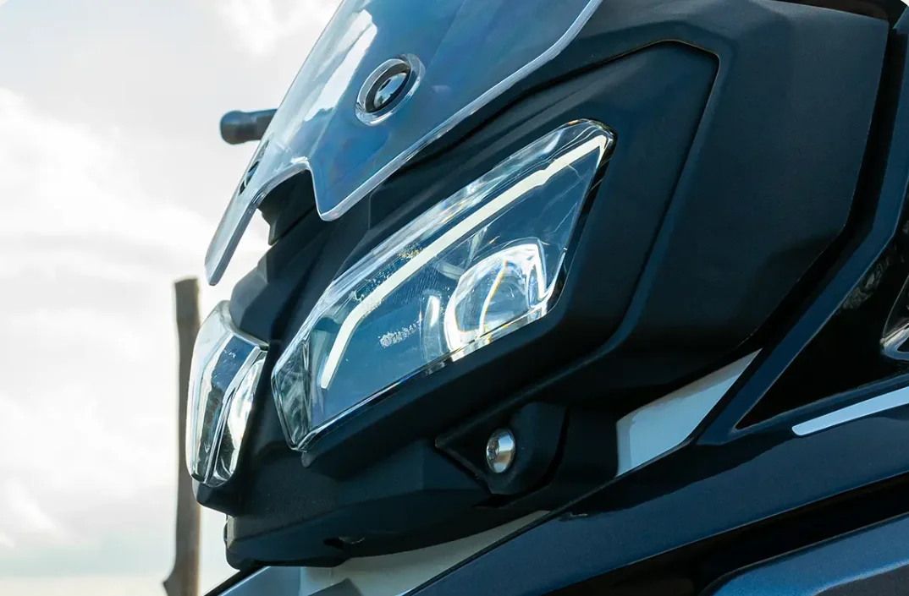
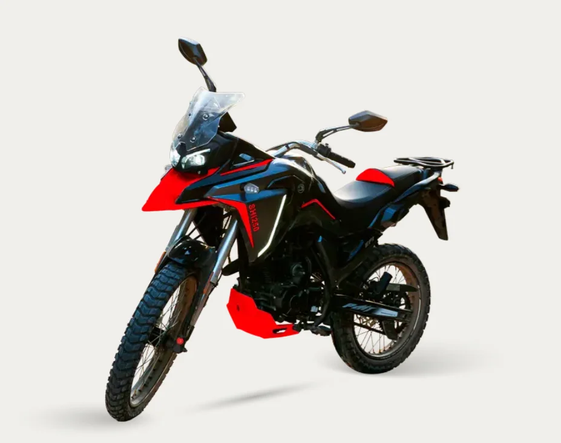
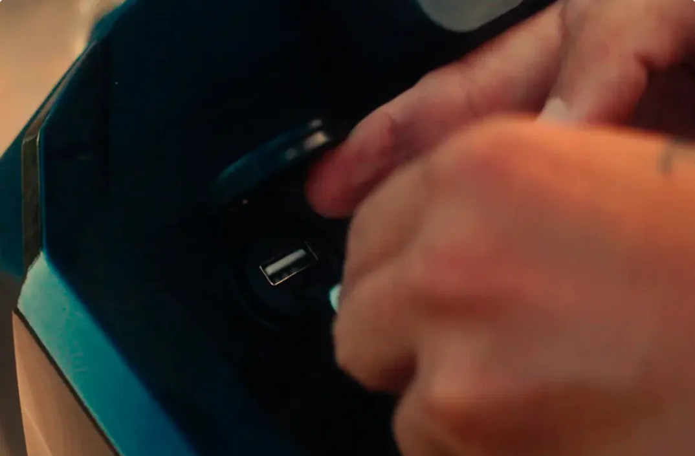
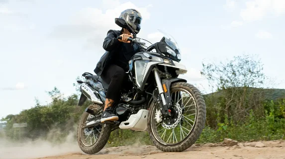
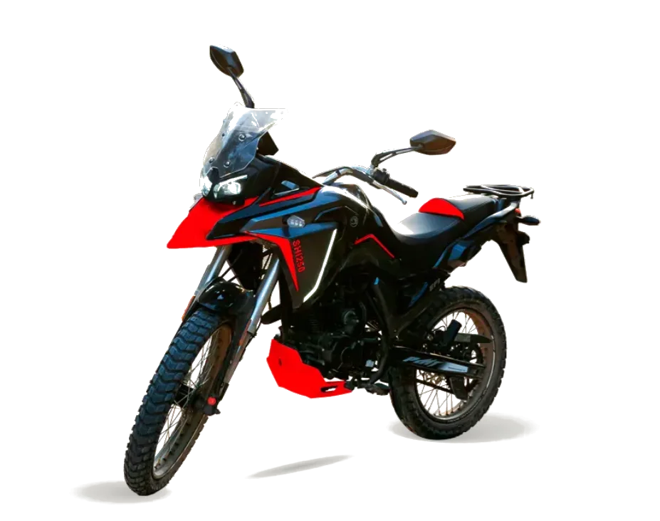
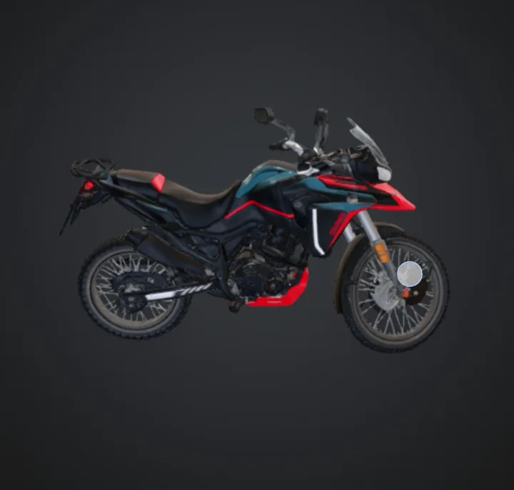
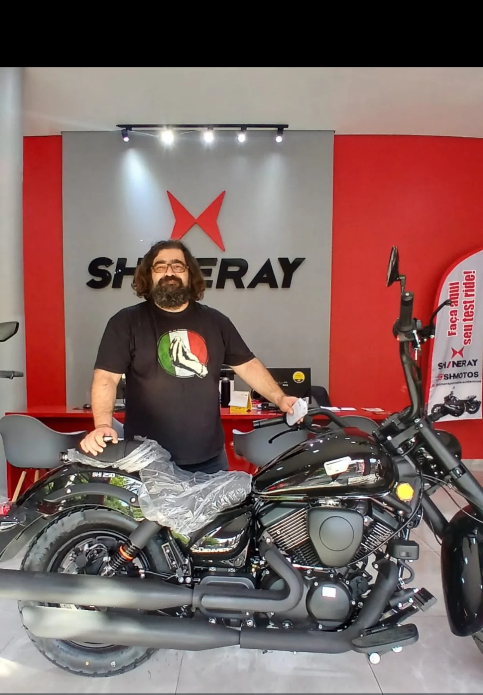
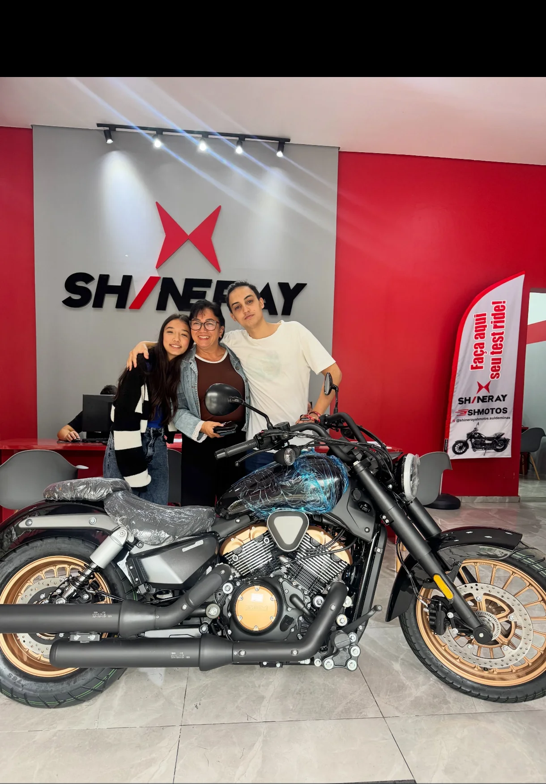
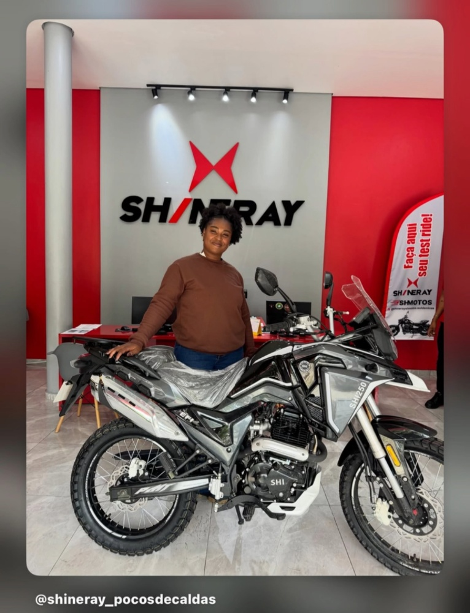

01 / ILUMINAÇÃO

Iluminação FULL LED
A SHI 250 oferece iluminação Full LED integrada à luz DRL, garantindo maior visibilidade e design moderno.
SHINERAY SUL DE MINAS
POÇOS DE CALDAS, MG
SHI 250 · 2026
Conheça a Shineray SHI 250 0 km em Poços de Caldas. Motor 250 cc, 6 marchas e conforto trail para cidade, serra e viagens.
[01 — SHINERAY SHI 250]
A 250 cc ideal para quem busca mais fôlego nas rodovias e serras do Sul de Minas sem abrir mão da agilidade urbana.

SHI 250* Especificações podem sofrer alterações. Consultar disponibilidade de cores e versões da SHI 250 na loja.

A SHI 250 oferece iluminação Full LED integrada à luz DRL, garantindo maior visibilidade e design moderno.

Protetor de escapamento, porta USB integrada, banco bipartido confortável e cavalete lateral.

Suspensão monoshock e desempenho robusto para encarar rodovias, serras, trilhas e o uso diário.
Saia da rotina com a cilindrada certa para encarar viagens de fim de semana, subidas com garupa e o dia a dia em Poços de Caldas.
Simule sua entrada e parcela ↘SHI 250 / ANATOMIA DO MOVIMENTO
Role para descobrir.
Veja os detalhes da SHI 250 se separarem
e tudo voltar a fazer sentido.
Exploração visual em camadas da SHI 250. Separação ilustrativa dos conjuntos visíveis.
SHI 250 / VOCÊ NO COMANDO
Toque nos comandos. A experiência começa na partida.

Dê partida para ativar os comandos.
Experiência visual e sonora ilustrativa. Velocidade, som e painel simulados não representam medições exatas.

24 ângulos do modelo 3D da SHI 250. Arraste com o dedo ou use as setas.
Conheça o que faz parte da experiência SHI 250.
Farol Full LED + DRL prontos
Efeitos ilustrativos sobre fotos reais da SHI 250.
[03 — ESCOLHA COM CONFIANÇA]
Veja a SHI 250 lado a lado com outros modelos e simule suas condições com a equipe local.
Escolha duas motos do catálogo e veja os principais dados lado a lado.
Uma estimativa inicial para ajudar na conversa com a loja.
Valores estimados. Sujeito à análise de crédito e condições da loja.
Receber simulação oficial no WhatsAppHistórias de clientes de Poços de Caldas e região.
“Atendimento espetacular do início ao fim! Comprei minha moto com o Willian e recebi todo o suporte necessário. A equipe é muito atenciosa, explicou todos os detalhes e passou muita confiança. Recomendo de olhos fechados!”
Michele Lopes Domingues · Google“Grande empresa de ótimo comprometimento com os clientes, um ótimo atendimento e após a venda tenho um bom suporte nas revisões da minha moto. Super indico, obrigado ao vendedor William.”
Ronivando Jose Clementino · Google“Quero enaltecer o trabalho do vendedor Willian de Paula (Poços de Caldas) por me atender maravilhosamente bem e proporcionar uma experiência incrível para minha aquisição! Muito obrigada Willian! Sucesso sempre! Parabéns pelo atendimento! Super satisfeita!”
Aline Zanichelli · Google“Comprei minha moto na SHINERAY, que vendedor mais educado e prestativo, um amor de pessoa. Já começa pelo atendimento a excelência da marca e da concessionária, podem procurar o vendedor Willian lá que vão ser extremamente bem tratados.”
João Ferreira · Google



Venha conhecer a moto de perto e converse com nossa equipe.
Horários:
Segunda - Sexta: 09h00 às 18h00
Sábados: 09h00 às 13h00
Consulte a disponibilidade da SHI 250 e agende seu Test Ride.
Agendar Test Ride no WhatsApp ↗[04 — ENCONTRE SEU PAR]
Cinco respostas. Novas possibilidades.
Descubra quais modelos combinam com a sua rotina.
Preparando seu quiz…
[05 — CATÁLOGO SHINERAY]
31 modelos da linha oficial.
Encontre o seu e consulte a loja.
Carregando modelos…
Tente outro nome ou selecione todas as categorias.
[06 — POR QUE ESCOLHER A SHINERAY SUL DE MINAS]
Concessionária autorizada Shineray em Poços de Caldas e região, com linha oficial completa.
Simulação rápida e condições claras com nossa equipe para você sair rodando sem burocracia.
Suporte completo no pós-venda, revisões programadas e peças genuínas à pronta entrega ou encomenda.
[07 — SUAS DÚVIDAS]
Sim. O motor 250 cc aliado ao câmbio de 6 marchas e à ergonomia trail garante conforto e fôlego tanto nas rodovias e serras do Sul de Minas quanto na rotina urbana.
Sim. Use o simulador acima ou chame nossa equipe no WhatsApp. Aprovação, entrada e parcelas dependem da análise e das condições da instituição financeira.
Converse com a equipe para confirmar a disponibilidade da moto no showroom e agendar sua visita na Av. João Pinheiro, 99 - Centro, Poços de Caldas.
Usamos cookies essenciais e de medição para melhorar sua experiência e personalizar o atendimento. Ao continuar, você concorda com nossa .